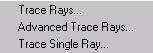

Trace Menu Dialogs
Trace Menu Dialogs
Topics in this section of the Contents tab include dialogs accessible from the
Trace
menu.
TRACE Rays Dialog
Traces all currently selected rays in storage.
Advanced Trace Rays Dialog
Adjusts the vertical plotting scale of current distribution data, and lists currently selected ray data.
Single Ray Trace Dialog
Defines and traces a single ray.
TRACE Rays Dialog
Traces all currently selected rays in storage.
Advanced Trace Rays Dialog
Adjusts the vertical plotting scale of current distribution data, and lists currently selected ray data.
Single Ray Trace Dialog
Defines and traces a single ray.
Parent topic:
ASAP Menus
Parent topic:
Trace Ray and Beams
Related reference
System Menu Dialogs
Rays Menu Dialogs
Analysis Menu Dialogs
Display Menu Dialogs